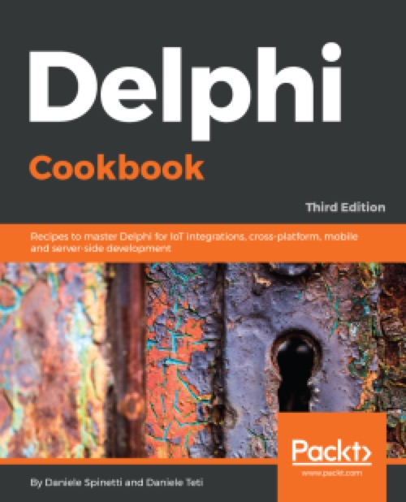

Delphi Cookbook - Third Edition
Published by : Packt
Writed by : Daniele Spinetti, Daniele Teti
Published date : 31/07/2018
ISBN-13 : 9781788621304
Language :  English
English
Web site : https://www.packtpub.com/product/delphi-cookbook-third-edition/9781788621304
About Delphi Cookbook - Third Edition
Delphi is a cross-platform integrated development environment (IDE) that supports rapid application development on different platforms, saving you the pain of wandering amid GUI widget details or having to tackle inter-platform incompatibilities.
Delphi Cookbook begins with the basics of Delphi and gets you acquainted with JSON format strings, XSLT transformations, Unicode encodings, and various types of streams. You’ll then move on to more advanced topics such as developing higher-order functions and using enumerators and run-time type information (RTTI). As you make your way through the chapters, you’ll understand Delphi RTL functions, use FireMonkey in a VCL application, and cover topics such as multithreading, using aparallel programming library and deploying Delphi on a server. You’ll take a look at the new feature of WebBroker Apache modules, join the mobile revolution with FireMonkey, and learn to build data-driven mobile user interfaces using the FireDAC database access framework. This book will also show you how to integrate your apps with Internet of Things (IoT).
By the end of the book, you will have become proficient in Delphi by exploring its different aspects such as building cross-platforms and mobile applications, designing server-side programs, and integrating these programs with IoT.
Where to buy ?
This book has the ISBN13 "9781788621304".
If it is still available for sale, you can order it in your favorite bookstore, by its publisher or online at
Amazon CA,
Amazon FR,
Amazon JP,
Amazon UK or
Amazon USA depending on your country.